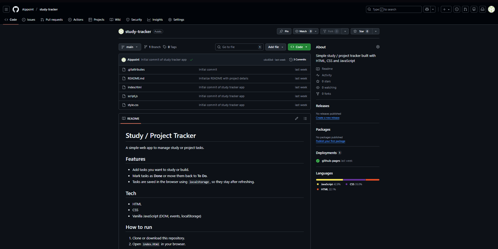

Study Tracker
Small web app that lets me record what I study each day and keep a simple history of sessions.
BCA · AI/ML · Web
First‑year BCA student exploring C, AI/ML and creative front‑end to turn ideas into interactive stories.
See featured projectsA vertical spine of the work that defines me.
Small web app that lets me record what I study each day and keep a simple history of sessions.
Collection of Web Technologies lab programs where I practised arrays, strings, forms, validation and Bootstrap components.
Collection of solved C programming lab exercises covering input/output, conditionals, loops, functions, arrays, strings, pointers, structures and file handling, all organized in a public GitHub repository.
A terminal‑based quiz game that tests basic programming concepts and tracks score.
My first responsive static website with sections for skills, projects and contact.
Reserved for an upcoming mini machine‑learning project during BCA.
Who I am and what I’m building toward.
I’m a first‑year BCA student specializing in AI and Machine Learning, currently learning C, Python and modern web development. I enjoy turning concepts from my courses into small, hands‑on projects – from console apps in C to dark, cinematic websites like this one.
Over the next few semesters I’m focusing on strengthening my core programming skills, building AI/ML mini‑projects and experimenting with WebGL/Three.js for more immersive portfolio pieces. This site will evolve as I learn, showcasing my best work and progress.
Let’s connect for projects, internships or collaborations.